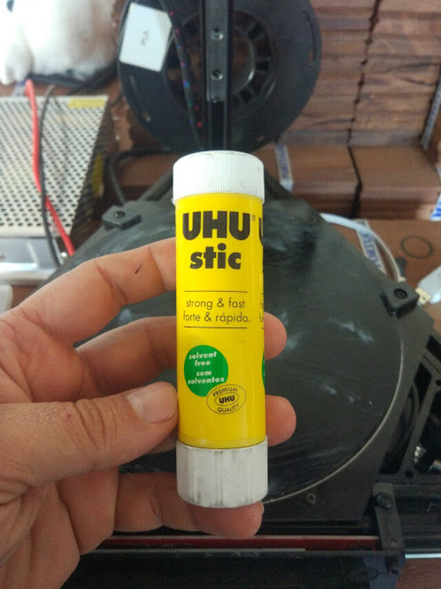
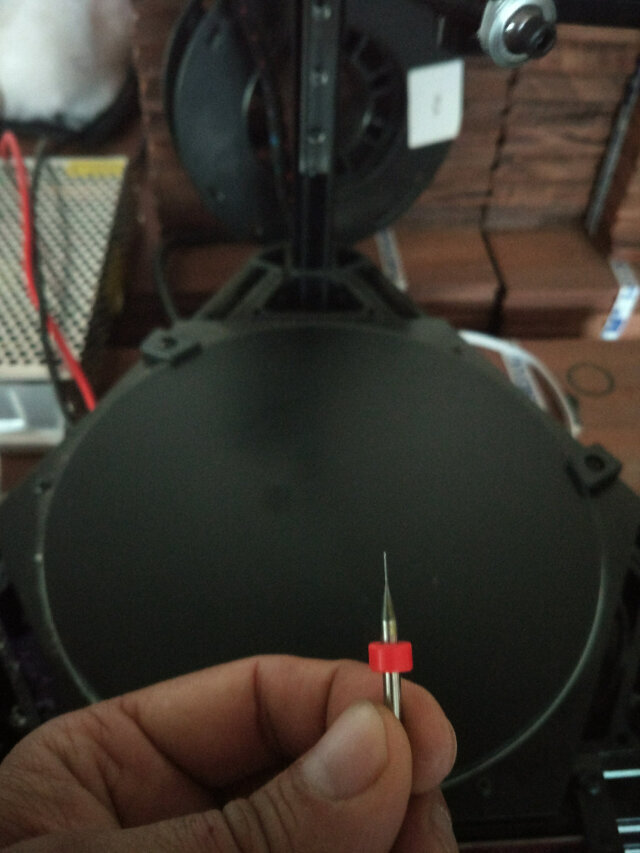
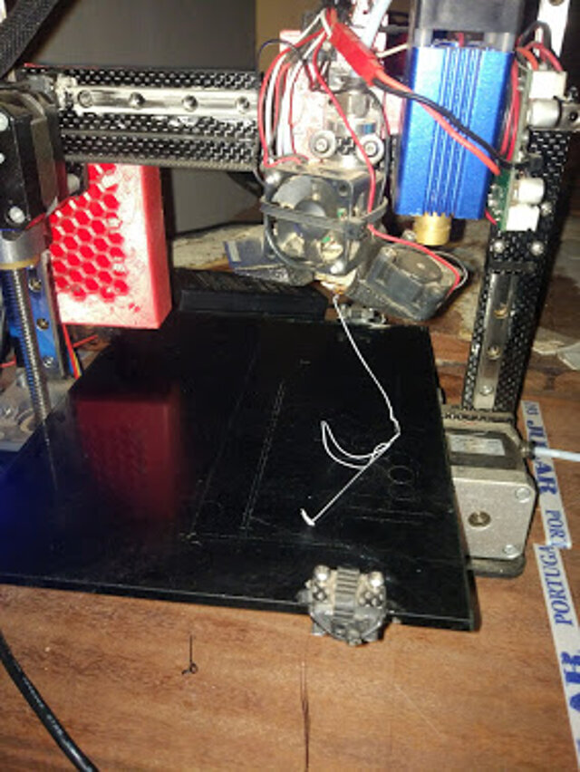
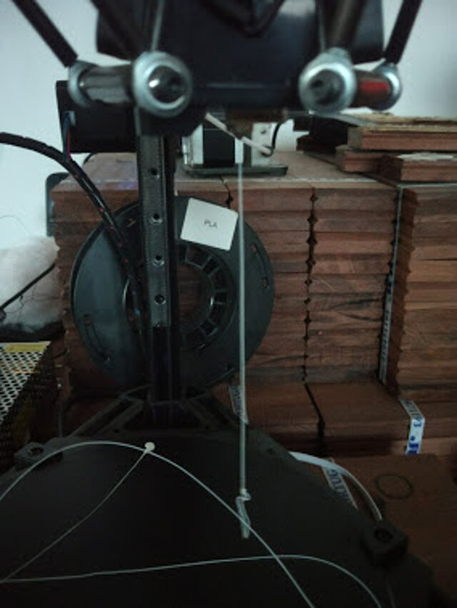

Week 06 - 3D Scanning and Printing
Assignment:
Week workflow
Weekly assignment → Test Printer → design as object → Print object → Scan object → print scanned object
Tools used
- Delta 3D Printer
- Mini 3D Printer
Software Used
- Repetier Host
- ...
- ...
Files Generated/used
- Printers preparation
- In order to start the test I prepared the printers by cleaning the nozzles and spreading new glue into the platforms
- I tested the extrusion on both printers and it looks good ;
- The limits of our printers
-
I started this week's assignment by looking for a test pattern on the website
Thingiverse
. Simply by using its search engine with the keywords,
"test 3d print"
it show various results with the purpose of testing the printers.

- Then I selected one of the designs. It tests different capabilities of the printers.
- Nut, Size M4 Nut should fit perfectly
- Wave, rounded print
- Star, Sharp Edges
- Name, Complex Shapes
- Holes, Size 3, 4, 5 mm
- minimal Distance: 0.1, 0.2, 0.3, 0.4, 0.5, 0.6, 0.7 mm
- Z height: 0.1, 0.2, 0.3, 0.4, 0.5, 0.6, 0.7, 0.8, 0.9, 1.0, 1.1 mm
- Wall Thickness: 0.1, 0.2, 0.3, 0.4, 0.5, 0.6, 0.7 mm
- Bridge Print: 2, 4, 8, 16 mm
- Sphere, Rounded Print 4.8mm height
- Sphere Mix, 7 mm height
- Pyramide, 7 mm height
- Overhang: 25, 30, 35, 40, 45, 50, 55, 60, 65, 70°
- Warp, does it bend?
- 3D Print Font, optimized for 3D printing
- Surface, Flatness
- Size, 100 x 100mm x 23.83 (10mm width)
- Spike, minimum Layer Time, 21 mm height from Bottom (include Baseplate)
- Hole in Wall, 4 mm diameter, check for proper print
- Raft Test, raft should be just under the model
- Retract Travel, check retract settings for longer travel
- On the software Repetier Host I loaded the stl file and sliced for each printer. Naming the Gcode with the printer designation in front.
- Next I took the Gcode I had save on the SD card and placed on the 3D printers and started the print.
- The prints were not bad but there was a lot of oozing (spider web). So I increased the retraction by half mm and the improvement is noticeable in both printers.
- ...........





While on the 3Dprinter test model's page I downloaded the design and took note of all the parameters it intends to test such as: